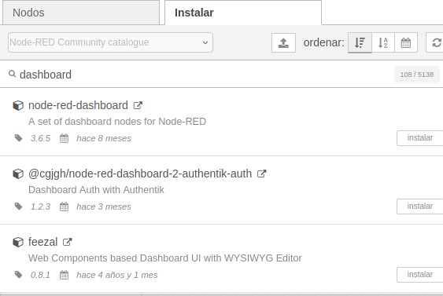
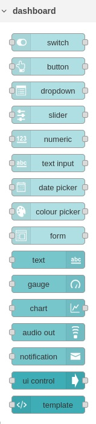
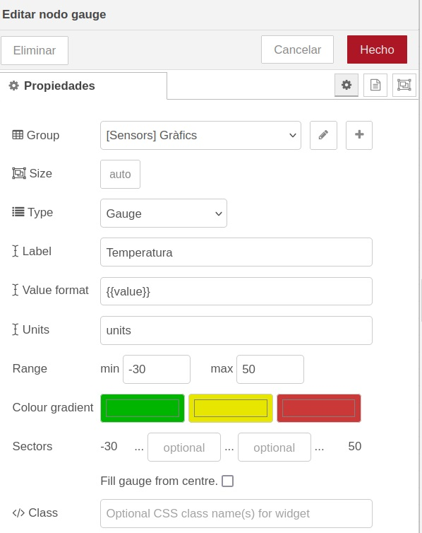
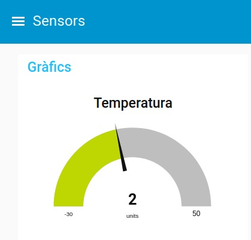
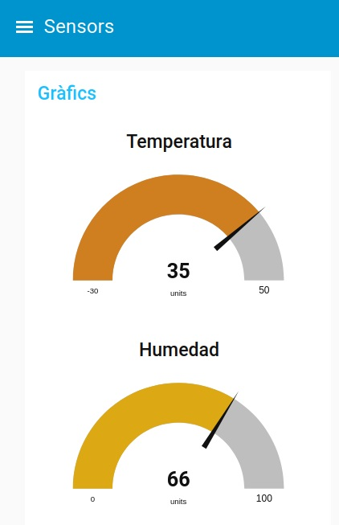
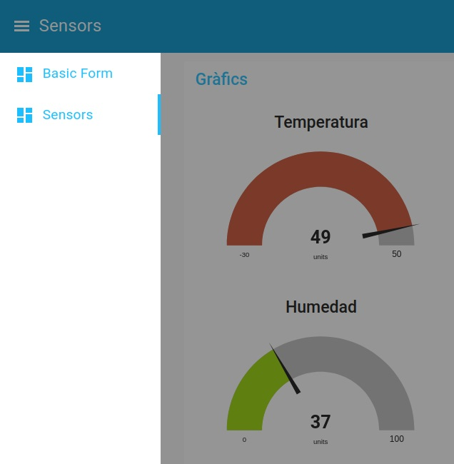

Node-RED Dashboards
En aquesta unitat veurem com crear interfícies gràfiques amb Node-RED. Això ens permetrà crear panells de control per a dispositius IoT, per a sistemes de monitoratge, per a sistemes de control, etc.
Introducció
Un dashboard és una interfície gràfica que ens permet interactuar amb una aplicació o simplement mostrar elements gràfics. Aquesta interfície pot ser molt senzilla o més complexa. En el cas de Node-RED, els dashboards ens permeten crear interfícies gràfiques per a les nostres aplicacions per a interactuar amb elles de forma més visual, crear gràfics o veure estadístiques o dades en temps real.
Instal·lació dels nodes de Node-RED Dashboard
Per a poder utilitzar els dashboards de Node-RED, primer cal instal·lar els nodes necessaris. Per a fer-ho, anem a la pestanya de configuració de Node-RED i seleccionem la opció de Administrar paleta o Manage palette. A la finestra que ens apareix, busquem el paquet node-red-dashboard i el seleccionem per a instal·lar-lo.

Una vegada feu clic en el botó d'instal·lar, es descarregarà i instal·larà el paquet amb els nodes necessaris per a poder crear dashboards.A la part esquerra vos hauria d'aparèixer una nova secció de nodes anomenada dashboard.

Creació d'un dashboard
Per a crear un dashboard, hem de copiar al flux els nodes que volem que se mostren. Cada node pertany a un tab i a un grup. Els tabs són les pestanyes que apareixen a la part esquerra del dashboard i els grups serveixen per agrupar certs nodes d'una pestanya en un únic element visual.
Anem a fer un exemple senzill creant un node de tipus gauge per mostrar els valors que van entrant al flux, per exemple amb un node random.
Exemple amb un gràfic tipus gauge (medidor)
1 - Creem un node inject per posar en marxa el flux. Injectarà el timestamp cada segon.
2 - Creen un node random per a generar un valor aleatori entre -30 i 50. En el nom posarem "Temperatura" per poder-lo diferenciar quan tinguem més nodes random. El connectarem amb el node inject.
3 - Creem un node gauge per a mostrar el valor de la temperatura. El connectarem amb el node random i li posarem en el camp Label el text "Temperatura" i en el tipus seleccionarem Gauge.
4 - Hem de definir en quin tab i en quin grup volem que aparega el node gauge. Anem a la secció de propietats i en el camp Group tenim un botó per editar i un altre per afegir un grup nou. Anem a crear un tab que s'anomene Sensors i dins un grup que s'anomene Gràfics. Les propietats del node quedarien tal com se veu en la següent imatge.

5 - Ara ja podem desplegar el flux. Ho fem i no se veu res. Això és perquè per a veure el dashboard hem d'anar a la URL [http://localhost:1881/ui].
Recordeu canviar el vostre port si no és el 1881, així com la IP si no és localhost.
6 - A la URL que hem posat, en el menú de l'esquerra seleccionem el tab Sensors i ens apareixerà el gràfic. Podem veure com en temps real ens va mostrant les temperatures que van entrant.

Afegint més gràfics al dashboard
Si agafem el flux que hem creat, seleccionem tots els nodes i fem copiar-pegar, tindrem un altre flux exactament igual. Ara anem a modificar el node random per generar un valor entre 0 i 100 i li posarem el nom "Humedad". També modificarem el node gauge per posar-li el nom "Humedad" i dir-li que els valors estaran entre 0 i 100. El nou node gauge tindrà el mateix tab i el mateix grup que el primer.
El resultat si despleguem i tornem a mostrar el dashboard serà el següent.

Si provem a posar els dos nodes gauge en grups diferents, se mostrarien en columnes diferents dins del tab Sensors.
Si els posàrem en dos tabs diferents, tindríem cada gauge en una pestanya diferent del dashboard.

Més nodes de dashboard
Per explorar més nodes de tipus dashboard podeu descarregar d'Aules els arxius JSON que trobareu a la carpeta Exemples dashboard. Una vegada carregats en la vostra instància de NodeRED, els examinarem i comentarem a classe.